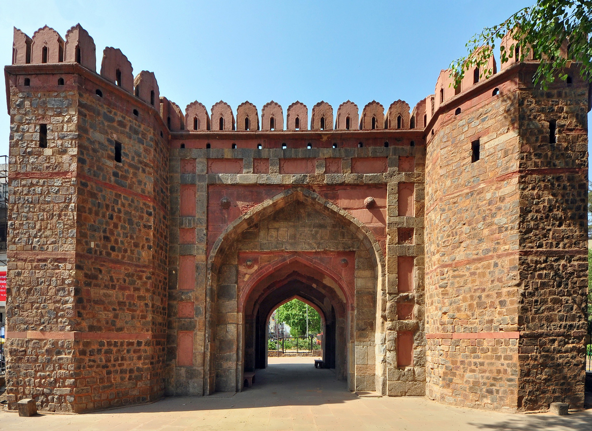

Shahi Qila - Lahore
Lahore has a total of 13 gates. Some of the famous gates
include Delhi Gate, Roshnai Gate, Bhati Gate, and Masti Gate.
Each gate has its own historical significance and adds to the
charm of the city.

Delhi Gate - Lahore
Lahore has a total of 13 gates. Some of the famous gates
include Delhi Gate, Roshnai Gate, Bhati Gate, and Masti Gate.
Each gate has its own historical significance and adds to the
charm of the city.
Meharu Nisa
Meharu Nisa, the captivating voice behind MYK News, blends her
passion for journalism with the pursuit of knowledge at Queen Mary
College, shaping narratives that resonate with audiences
worldwide.